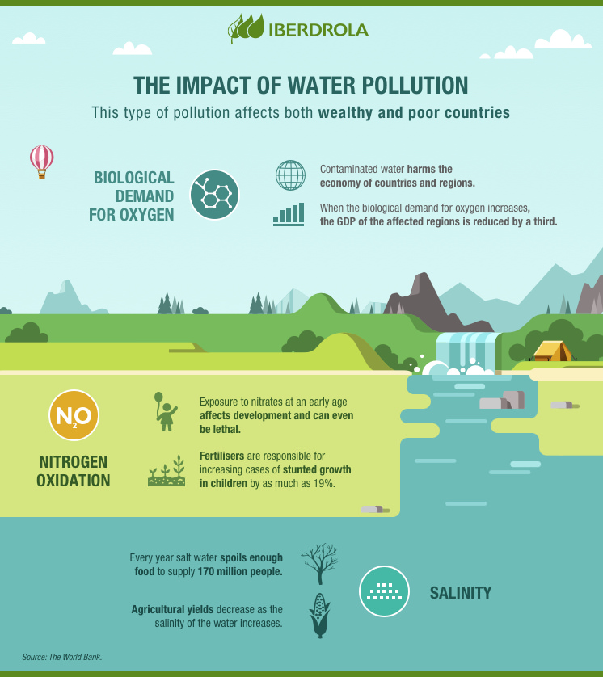

Deteriorating water quality is damaging the environment, health conditions and the global economy. The president of the World Bank, David Malpass, warns of the economic impact: "Deteriorating water quality is stalling economic growth and exacerbating poverty in many countries". The explanation is that, when biological oxygen demand — the indicator that measures the organic pollution found in water — exceeds a certain threshold, the growth in the Gross Domestic Product (GDP) of the regions within the associated water basins falls by a third. In addition, here are some of the other consequences:
Water wastage depletes aquatic ecosystems and triggers unbridled proliferation of phytoplankton in lakes — eutrophication —.
Fishing in polluted waters and the use of waste water for livestock farming and agriculture can introduce toxins into foods which are harmful to our health when eaten.
The UN says that billions of people around the world have no access to clean water to drink or sanitation, particularly in rural areas.
The WHO estimates that about 2 billion people have no option but to drink water contaminated by excrement, exposing them to diseases such as cholera, hepatitis A and dysentery.
According to the UN, diarrhoeal diseases linked to lack of hygiene cause the death of about 1,000 children a day worldwide.
